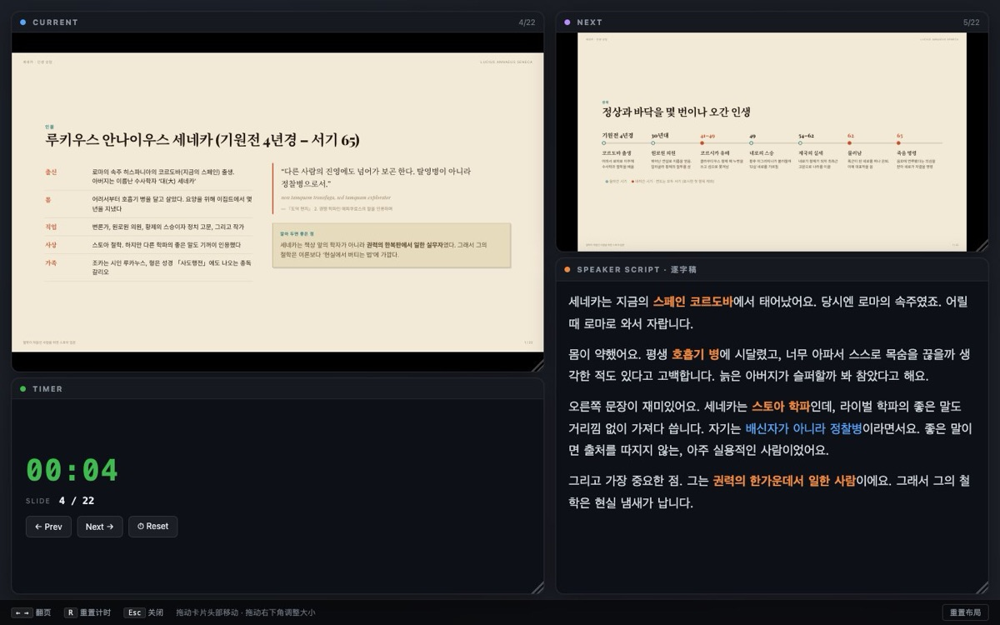
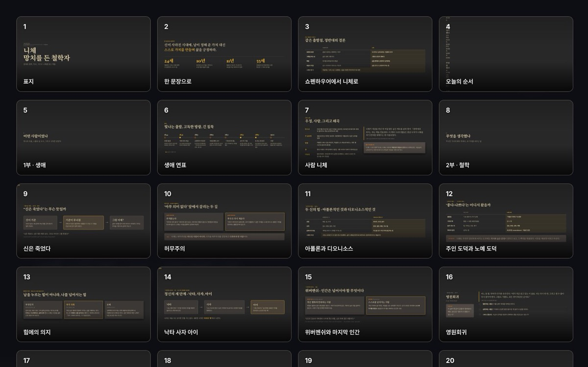

정주샘의 슬라이드 모음
주제별로 보기
철학과 문학, AI를 다룬 발표자료를 모아 둔 곳입니다. 브라우저에서 바로 열리고, 키보드로 넘기며 발표할 수 있습니다.
최신 발표 열기영상으로 미리 보기
발표자료를 1~2분 소개 영상으로 먼저 만나 보세요. 소리 없이 자막으로 보는 영상입니다.
아직 영상이 없습니다.
발표할 때는 이렇게
모든 발표자료가 같은 단축키로 움직입니다.
처음 열면, 방향키나 스페이스로 한 장씩 넘깁니다. 주소 끝에 #/5를 붙이면 다섯 번째 슬라이드에서 시작합니다.
교실이나 강당에서는, F를 눌러 전체 화면으로 띄웁니다. 어떤 화면에서도 16:9 비율이 유지됩니다.
대본이 필요하면, S로 발표자 창을 엽니다. 다음 슬라이드, 대본, 타이머가 한 창에 모입니다. N은 대본만 띄웁니다.
흐름을 훑어보려면, O로 모든 슬라이드를 펼칩니다. T를 누르면 테마가 바뀝니다.


전체 목록
2026년 2학기 7편
-
마르쿠스 아우렐리우스 · 황제가 자신에게 쓴 일기
로마 황제이자 스토아 철학자의 생애와 시련, 『명상록』의 구성과 다섯 가지 주제(아침·마음·장애물·사람·죽음), 기억할 문장과 핵심 가치, 오늘부터 해 보는 연습.
-
니체 · 망치를 든 철학자
니체의 생애와 핵심 사상(신의 죽음, 허무주의, 힘에의 의지, 위버멘쉬, 영원회귀, 운명애), 세 시기의 저서, 국내외 번역서·해설서·연구서·전기 안내와 독서 순서.
-
이향인 · 무리 속에서도 섞이지 않는 사람들
라미 카민스키 『이향인(The Gift of Not Belonging)』을 4부 19장 구조로 정리. 성향 지도, 블루투스 현상, 소속과 연결의 차이, 국내외 반응과 비판까지 표와 도표로.
-
쇼펜하우어 · 삶이 괴로울 때 읽는 철학
쇼펜하우어의 생애와 철학, 저서를 정리하고 『소품과 부록(소품집)』의 행복론·인생론을 쉽게 풀어낸 안내. 고통과 권태의 시계추, 행복을 결정하는 세 가지, 고슴도치의 거리.
-
세네카 · 2000년 전 로마에서 온 인생 상담
철학이 처음인 사람을 위한 스토아 입문. 세네카의 생애, 대표 저서 네 권, 기억할 문장과 핵심 가치, 오늘부터 해 보는 연습.
YouTube에서 보기 -
맥스튜디오 한 대로 만드는 나만의 AI 시스템
맥스튜디오 M5 Ultra 96GB 소개와 로컬 LLM·옵시디언 볼트·클로드 코드를 함께 쓰는 하이브리드 AI 작업실 구축 방법.
-
잃어버린 시간을 찾아서
마르셀 프루스트의 소설을 처음 만나는 사람을 위한 안내. 작가와 시대, 등장인물, 7권 줄거리, 핵심 주제.
찾는 발표자료가 없습니다. 다른 낱말로 찾아보세요.